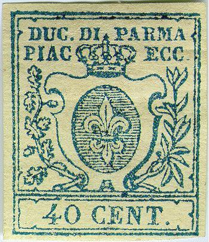
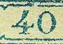
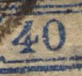
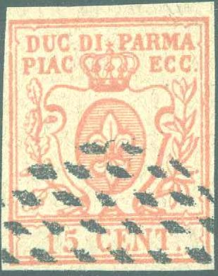
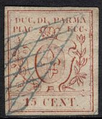
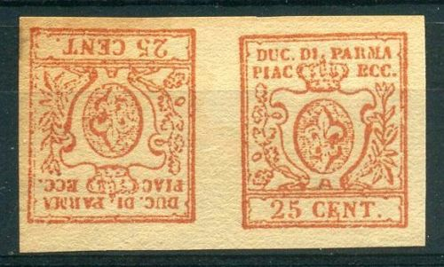
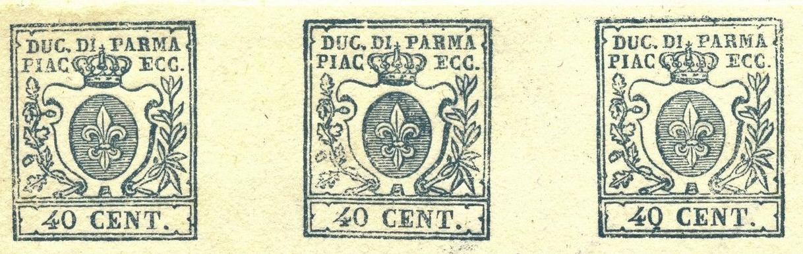
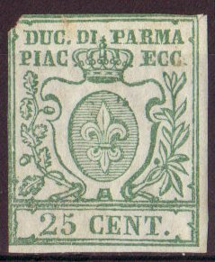

Return To Catalogue - Parma 1852 issue - Parma 1859 issue, part 1 - Parma 1859 issue, part 2 - Italy
Note: on my website many of the
pictures can not be seen! They are of course present in the
catalogue;
contact me if you want to purchase the catalogue.
Currency: 1 Lira = 100 Centesimi
With thanks to Lorenzo, (check his excellent website on Italian States! http://www.antichistati.com/800/index800.html) who kindly set some of his images at my disposal.
15 c red 25 c brown 40 c blue
These stamps were printed in sheets of 64 stamps.
Value of the stamps |
|||
vc = very common c = common * = not so common ** = uncommon |
*** = very uncommon R = rare RR = very rare RRR = extremely rare |
||
| Value | Unused | Used | Remarks |
| 15 c | R | R | |
| 25 c | *** | *** | |
| 40 c | *** | R | |
The 15 c stamp has been printed in sheets of 72 pieces with two different types: 71 pieces have the usual type and only one (the 27th of the sheet) presents some differences on the number "15", among them the tilted bar of the number "1" and the horizontal trait of the number "5" .A small curiosity should be noticed: all the 15 do have a small interruption of the horizontal line of the label, above the number "15" (sometimes hardly visible though on unclear stamps).(information obtained from Lorenzo).
The 25 c was also printed in two different types. The first one has the number "25" at the same distance from the upper and the lower label and it can be found in 63 samples of the sheet (made up of 72 pieces) while the second one has the numbers slightly lowered and the label broken over the number "5", it also presents in addition a small color trait in the two right lower laurel leaves. The differences between these two types are small and sometimes hard to see.
The 40 c also has two types. These are quite easy to see; the "0" of "40" is large in the first type while in the second type it is narrow. The first type occurs 52 times in a sheet and the second type 20 times:
 
(Left: first type with broad '0'; right: second type with narrow
'0' )
This and more information can be found at the
website of Lorenzo:
http://www.antichistati.com/800/index800.html.
Typical cancels:


A genuine Piacenza cancel?
There must be 30 horizontal lines in the central shield (counted on the left side). Note the specific shape of the "A" like ornament below the shield.
Forgeries, examples:



(Note the strange 'Fleur de lis' in the center of the stamp)
A whole sheet of uncancelled Spiro forgeries. Normally Spiro
forgeries are cancelled.

Different cancels on part of a sheet.
The 'Fleur de lis' in the center of the stamp is quite different from the genuine one. The 'A' just below the ellipse is much too broad. There are many more little differences in this forgery. A quick look at the cancels can condemn this forgery at once (even though, I have seen them being offered as genuine). These forgeries were possibly made by the forger Spiro (Hamburg, Germany). I have also seen these forgeries uncancelled and with a very convincing cancel: "PARMA 15 MAG..." or also the more crude "PIACEN... 15 GEN...", or "TORINO ??":
Other forgery:



The value inscriptions are much too small in the above forgeries. The lower part of the 'fleur de lys' is too small compared with a genuine stamp. The leaf and acorns (or whatever it may be) on the left are touching the border. Note that there are three acorns, instead of two. In the genuine stamps, the right hand olive leaf has a small olive in it, this forgery lacks this olive. This forgery is the first forgery described in Album Weeds. I've also seen the 15 c value uncancelled.


This forgery of the 40 c value has the value inscription too
large when compared to a genuine stamp. I've also seen it with a
(unreadable) circular cancel. Note that the upper right leaves
almost touch the second "C" of "ECC.". Some
of these forgeries have a "V.F."
cancel.


(Could these stamps be the second forgery of Album Weeds?)

V.E.Tyler in his book "Philatelic Forgers, their Lives and Works' mentions that the stamp forger Usigli made a photo-mechanical forgery of the 25 c value in vermilion on ribbed paper. He also made tete-beche pairs. This might have been the above forgery pair?
Album Weeds describes a second forgery; this forgery is blotchy, with the stop behind "ECC" being more like a rounded dash.

I've been told that this is a Fournier forgery of the 40 c value.
In some of the Fournier forgeries I've seen there is a blue dot
between the outer framelines just above the first "A"
of "PARMA". I've seen it with the forged "PARMA 9
AGOS 58" cancel, which was also used on the previous issue.
The cancelled stamp next to it appears to be from the same
origin.

Probably a Fournier forgery of the 40 c as well, with cancel
Page of a 'Fournier Album of Philatelic Forgeries' showing Parma
forgeries; at the bottom three forged 40 c stamps; they have been
overprinted with "FAC- SIMILE" at the back.

Block of 3 Fournier forgeries as taken from a Fournier Album.

Another page from a Fournier Album.
Fournier offers these stamps as second choice forgeries in his 1914 pricelist; two values for 1 Swiss Franc (the 40 c value, but I don't know which other value he offered).


Probably other Fournier forgeries with a "PARMA 9 AGOS
58" cancel as can be found in the 'Fournier Album of
Philatelic Forgeries'. Also the same forgery with a "PARMA
15 FEBB 58" cancel.

Either a genuine stamp with forged cancel or a forgery with
forged cancel. The "BORGO 6 FEBR 59" cancel can be
found in the Fournier album.
Page of the Fournier album with the "BORGO 6 FEBR 59"
cancel.


Forgeries, with the lettering quite badly done. All made by the
same forger. Often they are pasted on small pieces of paper. Note
that the upper left part of the fleur-de-lis is connected with a
thick line to the left part of the oval. I've seen several of
them with a "PARMA 14 MARZ 58" cancel, this cancel was
made by the forger Oneglia according to page 33 of the book
Philatelic Forgers by V.E.Tyler. Also a forgery of the previous
issue with the same cancel. It looks like this forgery type is
engraved.
A very deceptive forgery exists (according to 'The forged stamps of all countries' by J.Dorn) with the "P" in "PARMA" broken in the main stroke and a square dot after "DUC" instead of a round one. I have never seen this forgery.


A forgery with the leave patterns at the sides different. This
forgery is possibly of German origins. There is no dot behind
"DUC" and none behind "ECC".

Primitive forgery with the leaves and the Fleur de lis totally
different.

Another forgery of the 15 c value.


A 15 c blue stamp, possibly a proof or more likely a forgery, the
design is slightly different from the genuine stamps. Next to it
a similar forgery(?) in the correct colour red and a 40 c blue.
The leaf patterns at the left are different and the "C"
of "CENT" has a strange toppart. This forgery type was
apparently based on an illustration in Le Timbre Poste, No 132,
page 94 of Moens (December 1873). This
forgery can also be found in the catalogue of Placido Ramon de Torres "Album
Illustrado para Sellos de Correo" of 1879 (information
passed to me thanks to Gerhard Lang, 2016) on page 85 (see image
above). In the Billig guide of Parma, this 15 c forgery is shown
with cancel "PIACENZA 6 OTT 57".

A 25 c green stamp, this might be a real proof?
In The London Philatelist 10 1901 (page 240)
Emilio Diena in his article 'The 1857-9 issue of the duchy of
Parma' describes a forgery of the 40 c as:
It is, however, important to notice that there exists a
successful imitation of the 40 cent, on paper too thick and
hand-made. This imitation, made about ten years ago at Genoa, is
to be recognised especially by the letter "a" in
"PIAC", for it lacks the horizontal bar, and by the
first "c" of "ECC," which is too open. This
forgery occurs, as a rule, with the lozenge obliteration.
Could the forger from Genoa have been Edoardo Spiotti, a
specialist in forgeries of the Italian States (see V.E.Tyler,
'Philatelic forgers, their lives and works')?
For the 1859 issue of Parma click here.
Example (tax on foreign newspapers?):
(Inscription 'GAZZETTE ESTERE PARMA CENT .9')
This is actually a cancel and not a stamp.


{kind=link}
{kind=link}
{kind=link}
{kind=link}
{kind=link}
{kind=link}